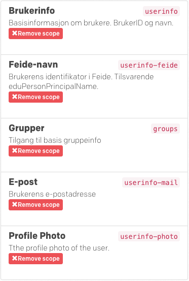

Hei du!
- og velkommen til en liten UNINETT Connect demonstrasjon
Om du vil kjøre meg på din egen server kan du laste meg ned på GitHubInnføring
Følgende er viktig å få med seg altså:
Da du kom for å besøke meg, ante jeg ikke hvem du var. Connect kjenner imidlertid meg,
så derfor jeg sendte deg aller først til henne med følgende informasjon:
Connect ba deg først om å identifisere deg med en ID som hun kjenner igjen (eks. Feide, IDporten, ...).
Deretter ble du bedt om å godta ("consent") at jeg også fikk vite litt mer om deg. Om du fulgte godt med så var hun ganske spesifikk.
Dette fordi jeg har tidligere snakket med Connect og fortalt henne akkurat hva slags informasjon jeg gjerne
vil ha fra de som besøker meg, bare se:

Da du sa til Connect at det er greit å dele dette med meg, sendte hun deg tilbake hit (til min redirect_uri).
Enn så lenge vet jeg ingenting om deg, men Connect sendte med en token som er knyttet til
deg som bruker og meg som klient. Denne kan benyttes for å spørre litt rundt etter informasjon.
Jeg tenkte at dette er noe vi kan gjøre sammen slik at du kan lære litt mer om hva det er som foregår, okei?
Rådata fra Connect endepunkter
Boksene nedenfor vil vise samme informasjon som du fikk i hvert steg på reisen (klikk på knappen for å vise/gjemme innholdet i hver boks).
Etter at informasjonen er mottatt vil du også legge merke til at navnet ditt (og kanskje til og med bilde) dukker opp her og der.
Connect Token
Connect /userinfo
Connect /groups/me/groups
En mer detaljert gjennomgang
Klienter og API Gatekeepere
Klienter
I jomfruturen din erfarte du hvordan vi snakket med Connect for identifisering og uthenting av informasjon.
La oss nå se kjapt på hvordan dette går for seg i bakgrunnen.
API Gatekeepere
Frem til nå har vi snakket mest om autentiserings-aspektet ved Connect og noen kjerne-endepunkter som hun tilbyr, men dette er ikke alt.
En super-viktig og super-nyttig funksjonalitet du får med Connect er tilgang til å bruke/dele informasjon via API Gatekeepere. Her er det
så mye kult jeg gjerne vil snakke om for å virkelig få deg til å se mulighetene, men min funksjon er å tilby en "liten UNINETT Connect demonstrasjon"
så jeg skal forsøke å fatte meg i korthet.
La meg likevel si at API Gatekeeper-aspektet tilbyr, som jeg ser det, to tre fire hovedfunksjoner:
- Den gjør det lett for deg å dele data (med andre eller bare deg selv) på en sikker måte (heter ikke gatekeeper for ingenting)
- Den gir deg mulighet til å "tappe" inn i og sy sammen data fra mange ulike APIer (dine egne og andres)
Hvordan Connect vet hvem jeg (klient) er
Tidligere fikk du vite at jeg fortalte Connect følgende om meg da jeg sendte deg til henne for autentisering:
Min egen URL er jo lett for meg å vite, men hvor fikk jeg tak i min client_id? Jo det skal jeg fortelle deg nå.
Connect har sin egen selvbetjente Dashboard, der du som utvikler kan registrere
klienter som meg, samt datakilder (eller APIer) som vi skal se på litt senere.
Å registrere en klient er fort gjort og har umiddelbar virkning, så du slipper å vente på at noen andre må gjøre noe. Selv ble jeg registrert og konfigurert på under 2 minutter, det er jeg sikker på!! Her ser du hvordan jeg ble født:

Deretter, med noen enkle klikk, ble jeg konfigurert i Dashboard'en til å få tilgang til de scopes som jeg
fortalte deg om tidligere (userinfo-feide, groups, m.fl.).
Det var altså ved registrering i Dashboard at ble jeg tildelt en unik client_id, som du finner igjen på
OAuth Details-siden:

Husk!
Dersom du flytter klienten til en ny URL så MÅ du huske å oppdatere redirect_uri både i
Connect Dashboard og i koden din!
Okei! Nå vet vi hvor/hvordan jeg er registrert med Connect. Stikk for all del innom
https://dashboard.feideconnect.no/ og
ta en titt selv.
I neste avsnitt ser vi på hvordan jeg er skrudd sammen slik at jeg faktisk kan sende deg til Connect
for autentisering og snakke videre med henne i etterkant.